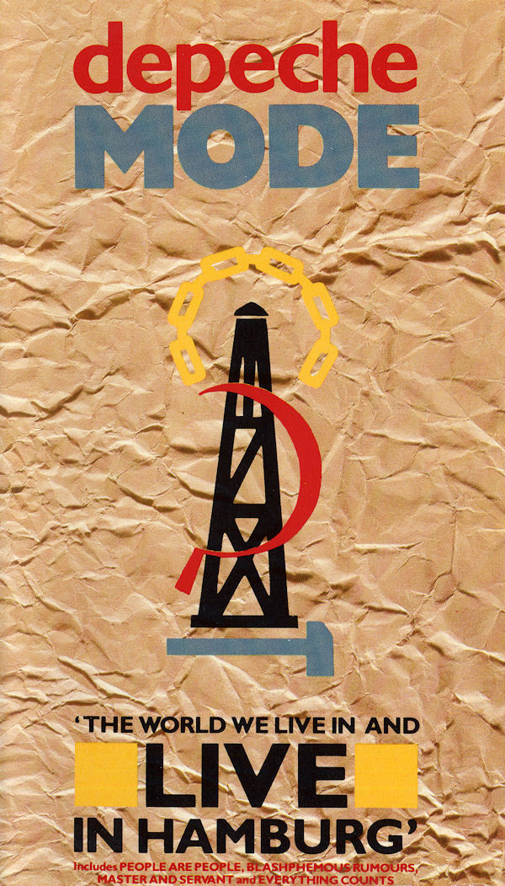

The World We Live and Live in Hamburg

- El título del videocasete fue tomado de la letra de la canción Somebody cambiando algunas palabras (...about the world we live in and life in general...).
- La curiosidad del material es que de la gira Some Great Tour se realizaron dos conciertos en la ciudad de Hamburgo, el 9 y el 14 de diciembre de 1984, pero no se indicó cual de los dos es el que se publicó.
- La interpretación de Photographic de éste concierto se incluyó también en el videocasete Some Great Videos de ese mismo año.
- En esos conciertos se tocaron también los temas Puppets y Ice Machine, pero no se incluyeron en este material.
En América y en Japón, el concierto The World We Live and Live in Hamburg apareció también en formato digital de Laserdisc. Para Norteamérica, sólo esta edición contiene la introducción.
En 1999 se republicó en Europa la edición de 17 canciones, nuevamente en videocasete. Fue un relanzamiento, no una nueva edición, y de los dos últimos materiales de Depeche Mode destinados exclusivamente a formato de videocinta, junto con el relanzamiento ese mismo año también del álbum en vídeo Devotional. No se ha publicado en formato digital.